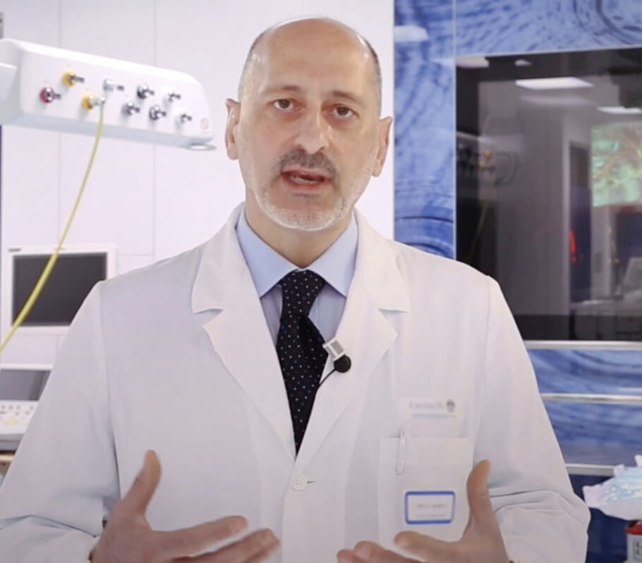

Wszyscy wiedzą, że nadciśnienie tętnicze, udar mózgu i zawał serca są konsekwencją "zabrudzenia" naczyń krwionośnych cholesterolem. Zabrudzone naczynia krwionośne są przyczyną 9 z 10 rzekomo nieuleczalnych chorób przewlekłych. Czym więc jest nadciśnienie i dlaczego jest niebezpieczne?
Nadciśnienie tętnicze jest chorobą, na którą cierpi co trzecia dorosła osoba w Polsce. Jednocześnie duża część społeczeństwa nie jest świadoma problemu i dlatego nie podejmuje żadnych działań zapobiegawczych. Spośród tych, którzy są świadomi swojej choroby, wielu nie otrzymuje odpowiedniego leczenia: przyjmują leki nieregularnie i w zbyt małych dawkach lub nie przyjmują ich wcale. Taki stosunek do swojego zdrowia powoduje wiele groźnych dla życia powikłań.
Aby tego uniknąć, najpierw należy odpowiedzieć na następujące pytania:

-
Co człowiek powinien wiedzieć o nadciśnieniu?
-
Dlaczego naczynia krwionośne są odpowiedzialne za 85% Twojego zdrowia?
-
Co jeszcze zatruwa naczynia krwionośne oprócz cholesterolu?
-
Cztery oczywiste i siedem ukrytych oznak uszkodzonych naczyń krwionośnych.
-
Jak można bezpiecznie oczyścić naczynia krwionośne w domu?
Na te pytania odpowiada dr n. med. Feliks Bielecki, polski kardiochirurg, obecny kierownik Kliniki Kardiochirurgii Pomorskiego Uniwersytetu Medycznego.
Aleksander Klimek: "Panie profesorze, zawsze pan mówi, że naczynia krwionośne są odpowiedzialne za 85% zdrowia organizmu? Dlaczego tak się dzieje?"
Feliks Bielecki: "Jaki jest największy organ w ciele człowieka? Niewiele osób wie, ale tak naprawdę największym organem jest nasz układ krwionośny. Naczynia to nie tylko rurki, przez które przepływa krew. Są one jednolitym, złożonym organem, którego problemy natychmiast prowadzą do bólu.
Co więc się stanie, jeśli naczynia krwionośne pozostaną nieleczone:
Choroba naczyń krwionośnych nóg - żylaki, ciągłe obrzęki i uczucie ciężkości nóg, uczucie zimna lub nieznośnego pieczenia w stopach.
Zablokowanie naczyń krwionośnych zaopatrujących wątrobę - zapalenie wątroby. Gorzkie odbijanie po spożyciu tłustych potraw.
Osłabione i zabridzone naczynia krwionośne w stawach - sucha chrząstka. Stawy stają się kruche i bolesne, osteochondroza obezwładnia, pojawiają się przepukliny.
Naczynia krwionośne w kanale odbytu ulegają osłabieniu - węzły hemoroidalne pokrywają się fioletowymi wypustkami.
Słabe naczynia krwionośne oka – widzenie jest zaburzone, a w oczach pojawiają się tętnienia. Rozwija się zaćma.
No i oczywiście królowa chorób naczyniowych, Jej Wysokość -
nadciśnienie tętnicze. Nadciśnienie tętnicze jest matką udaru mózgu i siostrą zawału serca.
"Nie ma szczęścia bez zdrowia" - a nie ma zdrowia bez czystych naczyń krwionośnych.
Na przykład, nadwaga jest ściśle związana z naczyniami krwionośnymi Naczynia krwionośne zatkane cholesterolem powodują, że narządy są niedożywione, naczynia krwionośne nie mogą dostarczyć im odpowiedniej ilości składników odżywczych. To powoduje, że mózg wysyła sygnały do jedzenia. Ale narządy nadal nie są wystarczająco odżywiane z powodu blokady w naczyniach krwionośnych. Mózg ponownie daje sygnał do jedzenia. I tak w kółko.
Chcesz żyć pełnią życia? Oczyść i napraw swoje naczynia krwionośne. Czyste naczynia krwionośne są kluczem do pokonania 90% chorób przewlekłych, z których część uważa się za nieuleczalne."
"Jeśli normalne pole przekroju naczynia jest grubości palca, to 5 kg blaszek cholesterolowych zmniejsza pole przekroju do wielkości 4 zapałek".
Aleksander Klimek:
"Jeśli normalne pole przekroju naczynia jest grubości palca, to 5 kg blaszek cholesterolowych zmniejsza pole przekroju do wielkości 4 zapałek".
Feliks Bielecki: "Tak, to prawda. Blaszki cholesterolowe, znane również jako "blaszki miażdżycowe", są odpowiedzialne za około 60-70% zanieczyszczeń w naczyniach krwionośnych. Przed 50 rokiem życia w organizmie gromadzi się do 5 kg blaszek cholesterolowych. Złogi cholesterolu wielokrotnie ograniczają przepływ krwi w naczyniach krwionośnych.

Jeśli masz ponad 45 lat i nigdy nie zażywałeś nutraceutyków oczyszczających naczynia krwionośne, gwarantuję, że masz zaburzenia naczyniowe. Naczynia krwionośne zatykają się cholesterolem, tworzą się zakrzepy - to niemal naturalny proces starzenia się. Oczywiście współczesne pożywienie, tabletki, palenie papierosów i alkohol przyspieszają ten proces 5-8 krotnie. Najmniejszy stres, zmiany pogodowe, burza magnetyczna, natychmiast wpływają na nasze zdrowie. Wzrasta ciśnienie krwi, pojawiają się zawroty głowy, szum w uszach, bóle głowy i bóle stawów.
Cztery choroby spowodowane uszkodzeniem naczyń krwionośnych:
-
1. "Nadciśnienie tętnicze"
Głównym objawem nadciśnienia tętniczego są bóle głowy. Jest to spowodowane zwężeniem naczyń krwionośnych w mózgu. Ponadto, uczucie ciężkości w głowie, kołatanie serca i zawroty głowy są częstymi objawami nadciśnienia.
-
2. "Żylaki"
Żyły nóg są obrzęknięte, nieregularnie i zle ukształtowane, ciężkie i bolesne. Cholesterol i skrzepy krwi zatykają żyły. Stopniowo pojawiają się naczyniowe "gwiazdy", które następnie przekształcają się w naczyniową "sieć".
-
3. "Hemoroidy"
Kiedy naczynia odpływowe w odbycie zostają zablokowane, hemoroidy puchną. Jeśli najpierw zostaną zablokowane naczynia krwionośne, dochodzi do pęknięć w odbycie, a następnie do jego rozerwania.
-
4. "Osteochondroza"
Osteochondroza jest problemem braku krążenia krwi w chrząstce. Chrząstka twardnieje i zaczyna się zużywać, nie mając czasu na naprawę. Traci zdolność do samodzielnego utrzymania się. Sole nie są wypłukiwane i zaczynają gromadzić się w sposób niekontrolowany, tworząc torbielowate masy.
Siedem oznak zagrożenia:
-
1. "Obrzęk"
Wieczorem stopy puchną, a skarpetki ciągną się za kostki, pozostawiając ślady. Opuchnięta twarz i worki pod oczami. Obrzęk oznacza, że narządy są spuchnięte.
-
2. "Tinnitus"
Od ledwo słyszalnego pisku do głośnych krzyków, które utrudniają koncentrację. Są to skutki zwiększonego ciśnienia naczyń mózgowych uciskających błonę bębenkową.
-
3. "Vertigo"
Poczucie " oszołomienia", nagłe i gwałtowne ataki zawrotów głowy wskazują, że układ naczyniowy jest " wygłodzony". Często zaburzony jest również słuch.
-
4. "Bezsenność"
Czujesz się senny i ospały, ale nie możesz zasnąć? Jest to spowodowane brakiem dopływu krwi do przysadki mózgowej. Przestaje produkować melatoninę, hormon snu.
-
5. "Zmęczenie"
Nie masz energii. Nie masz ochoty nic robić. Chcesz się po prostu położyć. To uczucie pojawia się, gdy organizm przechodzi w tryb oszczędzania energii. Twoje narządy nie otrzymują wystarczającego odżywiania przez zanieczyszczone naczynia krwionośne, a twoje ciało stara się zmniejszyć poziom aktywności, aby uniknąć śmierci.
-
6. "Problemy z widzeniem"
"Leci" przed oczami, ciemność i mgła w oczach. Są to objawy niewydolności naczyniowej oka.
-
7. "Ból stawów"
Ze względu na pogodę - bóle stawów. Kiedy budzisz się rano, nie czujesz się obudzony i wypoczęty, ale jak odrętwiały, na wpół sparaliżowany kaleka. Płyn maziowy traci swoje właściwości, sklejając stawy niczym klej.
Często zdarza się, że u osób w różnych kombinacjach występuje więcej niż jeden objaw w tym samym czasie. Jednocześnie mają one różne objawy w różnych kombinacjach. Biedniejsi ludzie próbują leczyć każdą chorobę osobno. Tabletki na ciśnienie krwi, kremy na żylaki, leki na hemoroidy, żele na osteochondrozę. I, oczywiście, środki przeciwbólowe. Zabiegi te są stratą pieniędzy, ale przyczyna wszystkich chorób jest zawsze taka sama - zaburzenia krążenia. Musisz zacząć od ogólnego oczyszczenia naczyń krwionośnych.
"Większość leków nie pomaga i nie leczy, ale osłabia i szkodzi"
Aleksander Klimek:
"Jaki jest najskuteczniejszy sposób na oczyszczenie naczyń krwionośnych z cholesterolu, skrzepów krwi i zwapnień?"
Feliks Bielecki: "Jeśli chodzi o bezpieczne oczyszczanie naczyń krwionośnych, mogę przytoczyć tylko jeden produkt o nieskazitelnej reputacji - Cardiofort. Przedłuża życie o 12-17 lat, dodaje energii i odpręża.
Cardiofort to w 100% naturalny produkt na bazie ekstraktów roślinnych, który w kontakcie z wodą budzi do życia żywe substancje czyszczące. Te niewielkie środki czyszczące usuwają z naczyń krwionośnych śluz cholesterolowy, a także przyklejone do ścian skrzepy: zwapnienia, pozostałości leków. Wszystko, co zakłóca swobodny przepływ krwi. Nagromadzone przez lata, zatruwające nam życie, zmywa się kropliami Cardiofort po 1,5-2 miesiącach regularnego stosowania.
Bóle głowy i szumy uszne (dzwonienie w uszach) znikają wraz z nimi. Mózg, prawidłowo odżywiony przez czyste naczynia, pracuje z prędkością superkomputera. Myśli stają się jasne i wyraźne.
Twoje zmysły zwiększają się i słyszysz przyjemne dźwięki, na które wcześniej nie zwracałeś uwagi. Twój słuch poprawia się, możesz nawet zrozumieć cichą rozmowę w innym pokoju.
Zapachy nabierają nowych barw. Twój oddech jest swobodny i równomierny. Świeże powietrze wypełnia płuca, rozchodzi się po ciele przyjemnymi falami, powodując uczucie lekkiej euforii.
Smak staje się jasny i pełny. Proste jedzenie sprawia wielką przyjemność. Jesz mniej, a Twój organizm szybciej się nasyca. Znikają ciągłe zachcianki na słodycze i tłuste potrawy.
Nie ma już bólu w stawach. "Skrzypienie" znika całkowicie, a w zamian pojawia się płynność ruchów, dzięki przywróconemu nawilżeniu stawów."
Aleksander Klimek:
"Imponujące. W rzeczywistości, po raz pierwszy słyszę o Cardiofort. Słyszałem jednak o nutraceutykach w ogóle. W Japonii i Izraelu nutraceutyki zostały oficjalnie zatwierdzone jako preferowany sposób leczenia.A w Polsce te leki nadal nie są uznawane za godne zaufania. Dlaczego?"
Feliks Bielecki: "Pozwólcie, że opowiem wam historię o braku zaufania. W 1928 r. wynaleziono pierwszy antybiotyk - penicylinę. Z łatwością leczył czerwonkę i tyfus brzuszny, na które ludzie nieuchronnie umierali.
Jednak większość ludzi nie wierzyła, że to może pomóc, ponieważ w przeszłości po raz setny zawiedli się na próbach wyleczenia tych chorób. Ci, którzy zawiedli się po raz setny i nie przestraszyli się 101. próby, zostali wyleczeni. A ci, którzy się poddali, odmachnęli na pożegnanie i powiedzieli: "Kolejne cudowne lekarstwo, które nie zadziała", umarli, mimo że ich zbawienie było tuż pod ich nosem.
Tak jak penicylina już dawno pokonała powszechne w tamtych czasach choroby: czerwonkę, tyfus brzuszny i pneumonię. Tak więc, z czasem Cardiofort wyeliminuje choroby naczyniowe. Pierwsze kroki zostały już podjęte - Japonia, Kanada, Korea, Szwajcaria i Izrael wprowadziły ustawę o oczyszczaniu naczyń krwionośnych za pomocą nutraceutyków zamiast terapii lekami. W Polsce Cardiofort jest oficjalnie przepisywany tylko w jednym miejscu - w szpitalu w Warszawie. To tu leczy się "śmietanka towarzyska" - ministrowie, posłowie, celebryci i inne elity. Są oni traktowani zgodnie z izraelskimi protokołami. Dla reszty naszych obywateli Ministerstwo Zdrowia proponuje leczenie chemikaliami produkowanymi w fabrykach należących do tej samej elity."
"Nasze wątpliwości są zdrajcami, a z ich powodu tracimy wiele z tego, co mogliśmy mieć z obawy przed próbą."
Aleksander Klimek:
"Co się stanie, jeśli rozpocznę oczyszczanie organizmu za pomocą Cardiofort?
Jak działa ten produkt?"
Feliks Bielecki: "Kiedy cząsteczki
Cardiofort są nasycone wilgocią i tlenem, ekstrakty lecznicze uzyskują efekt nadtlenku wodoru - dotlenienie. Cząsteczki Cardiofort to małe bomby tlenowe. Rozbijają one przegrody cholesterolowe w naczyniach krwionośnych i umożliwiają swobodny przepływ krwi. To jest powód, dla którego Cardiofort jest tak skuteczny - pijesz żywe ekstrakty, które aktywnie działają. Skład kropel zapewnia natychmiastowe wchłanianie żywych cząstek. Bogate w tlen ekstrakty są łatwo wchłaniane przez ściany przełyku. Dlatego Cardiofort nie powoduje zgagi, goryczy w ustach, odbijania się, nie podrażnia jelit i chroni żołądek. Możesz używać Cardiofort nawet jeśli masz wrzody.
"Cardiofort to skarbnica rzadkich ekstraktów leczniczych, które działają w harmonii, aby utrzymać naczynia krwionośne czyste i silne."
Jak zmieni się Twoje zdrowie i samopoczucie:
OCZYSZCZA NACZYNIA WŁOSOWATE
Ziele serdecznika wypłukuje cholesterol. Niczym dłuto, jego cząsteczki odpychają cząsteczki cholesterolu, które przylegają do ścian naczyń krwionośnych. Przepływ krwi staje się niezakłócony. Chrząstka w końcu zaczyna się "odżywiać". Znikają zgrzytanie i skrzypienie w szyi, plecach i stawach. Kolana i palce u stóp nie bolą już z czasem.
Krążenie w skórze zostanie przywrócone - pajączki i naczynia znikną. Żylaki będą się stopniowo zmniejszać, a hemoroidy wysychać.
POJAWIA SIĘ ENERGIA
W grę wchodzą molekuły ekstraktu z kwiatostanów chmielu. Wychwytują one cząsteczki cholesterolu i przyłączając się do nich, przekształcają je w korzystne lipoproteiny o dużej gęstości, które uczestniczą w rozkładzie tłuszczów.
Cardiofort gotuje dwie pieczenie na jednym ogniu - usuwa cholesterol zanieczyszczający naczynia krwionośne i stymuluje prawidłowe spalanie tłuszczu. To daje ci zastrzyk energii i sprawia, że jesteś bardziej energiczny.
USUNIĘCIE STRESU
Antyoksydant tokoferol łagodzi skurcze naczyń krwionośnych. Działa on niczym korzeń waleriany na naczynia krwionośne. Rozluźnia i łagodzi naczynia, które zwężają się z powodu braku przepływu krwi. Ciśnienie krwi wraca do normy w sposób łagodny i bezpieczny. Znikają bóle głowy, znikają szumy w uszach, płuca i oskrzela funkcjonują łatwo i sprawnie.
PRZYNOSI ULGĘ SERCU
Olej rzepakowy oczyszcza naczynia krwionośne z zakrzepów. Wyciąg z rokitnika powoduje rozrzedzenie krwi. Rozpuszcza się nawet małe tętniaki. Osady wapnia pozostawione przez chemikalia są zmywane.
EFEKT MOTYLA
Cardiofort jest jak uderzenie skrzydeł motyla, wywołujące ekscytującą reakcję łańcuchową w duchu zmian. Krok po kroku, Cardiofort uruchamia reakcję łańcuchową, która oczyszcza organizm, zaczynając od oczyszczenia z odpadów, które gromadziły się w naczyniach krwionośnych przez dziesięciolecia.
ŁATWE PRZEBUDZENIE
Budzisz się rano i z łatwością wstajesz z łóżka - nie musisz się zmuszać do wstawania, przeciągając się i pocierając zesztywniałe nogi, skrzypiące plecy i kark.
TWARDE NOGI
Wychodząc z domu nie musisz się już martwić o swoje stopy - chodzenie nie stanowi problemu. Możesz chodzić cały dzień, a Twoje stopy nie będą zmęczone ani opuchnięte.
ABSOLUTNY SPOKÓJ UMYSŁU
Jesteście całkowicie spokojni i zrelaksowani. Koniec z ciągłym bólem, który pochłania Twój umysł, uniemożliwiając Ci skupienie się na czymkolwiek innym. Kiedy nic nie boli, zwykłe widoki, dźwięki i zapachy zostają przytłoczone przez dawno zapomniane doświadczenia.
JASNOŚĆ MYŚLENIA
Nawet po ciężkim dniu pracy wracasz do domu z jasnym, pogodnym umysłem. Twój mózg pracuje jak szwajcarski zegarek nie odczuwając zmęczenia.
IDEALNY SEN
A teraz, leżąc w łóżku, zasypiasz szybko i przyjemnie. Minęły już czasy podrzucania i obracania się przez pół nocy, przewracania poduszki i wciąż nie zasypiania. Teraz to proste - Ty decydujesz, kiedy zasypiasz, a Twoje ciało wykonuje Twoje polecenia.
"Jest to niesamowity i naturalny sposób leczenia różnych chorób i poprawy codziennego życia człowieka. I musisz znaleźć sposób, aby dodać ją do swojego życia."
Program "Czyste statki" działa od r.
Cardiofort nie jest już sprzedawany w aptekach.
Powodem konfliktu była chciwość sieci farmaceutycznej, która zażądała od producenta Cardiofort dodatkowych 39 euro do każdego sprzedanego produktu! Firmy farmaceutyczne, świadome już wysokiej marży na cenie producenta (Cardiofort kosztuje do 120 euro w niektórych aptekach w Rzymie), chciały dodatkowo obciążyć nabywcę.
Przedstawiciele aptek usprawiedliwiają się - mówią, że taki suplement pozwala im przetrwać. W końcu "Cardiofort" to lek, który kupuje się raz na 7-10 lat. Poza tym, po oczyszczeniu naczyń człowiek nie potrzebuje już żadnych leków, które wcześniej stale przyjmował! Ludzie przestają obniżać ciśnienie krwi i nie kupują już środków przeciwbólowych. Leki na cukrzycę zostały znacznie zredukowane. A to powoduje, że apteki tracą pieniądze. Dlatego zażądali najwyższej ceny za Cardiofort.
W rezultacie producent, firma Cardiofort zerwała kontakty ze wszystkimi aptekami i przeszła wyłącznie na dystrybucję internetową. Po pierwsze, jest to sprawiedliwe. Oceńcie sami: nie musicie płacić czynszu, a apteki nie potrzebują łapówek, aby sprzedawać ten produkt. Dlatego Cardiofort jest teraz dostępny jako oferta specjalna.
Nasza Uczelnia, wspólnie z Narodowym Centrum Badań Medycznych w zakresie Kardiochirurgii oraz wspólnie z producentem
Cardiofort, uruchomiła program w ramach projektu Telemedycyny (Medycyna-Internet).
Każdy może zgłosić się po odbiór Cardiofort na korzystnych warunkach, oferta ważna do
lub do wyczerpania zapasów z regionalnego magazynu
Cardiofort.Wszystko to pomimo braku reklamy w radiu i telewizji. Ludzie dzielą się informacją, polecają je rodzinie i znajomym.
Warunki korzystania z produktu Cardiofort.
Tylko dla użytku osobistego.
Zgłoś się za pomocą formularza na naszej oficjalnej stronie internetowej.
Wszystko to zostało zrobione w celu zwalczania spekulacji na tym produkcie, gdy brokerzy próbowali kupić krople Cardiofort w dużych ilościach i odsprzedać je, korzystając z własnej marży.
Aplikuj poprzez nasz oficjalny formularz zgłoszeniowy. Oficjalny formularz zgłoszeniowy jest gwarancją jakości i zabezpieczeniem przed spekulantami.